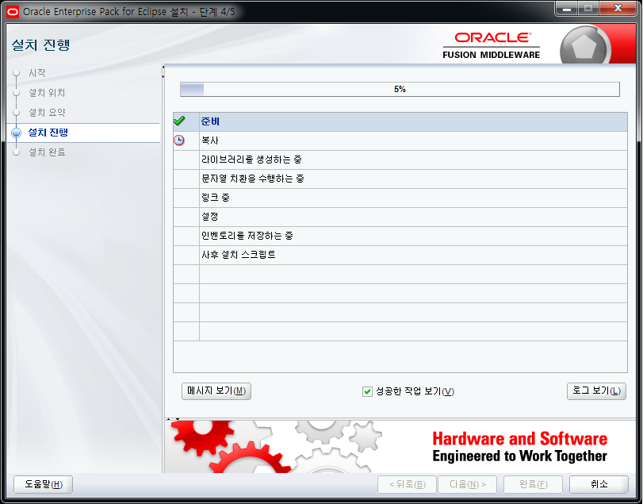
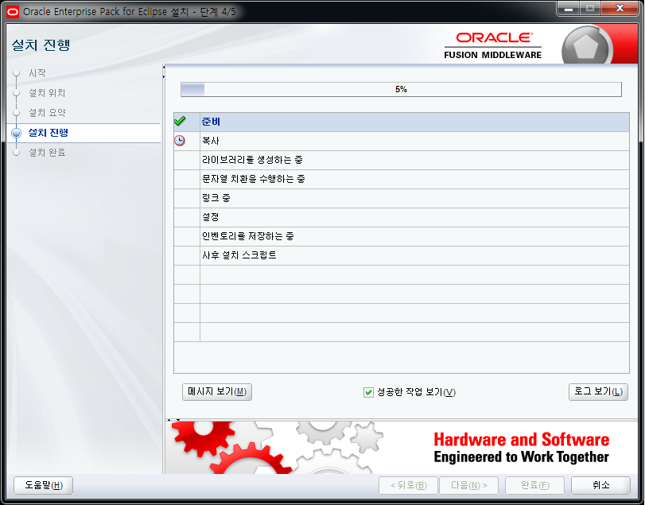

A brief procedure to create a domain after downloading and installing WebLogic will be described using WebLogic 12.1.3.0 on the Windows platform as an example.
Download
As BEA Systems, which developed WebLogic in April 2008, was acquired by Oracle, WebLogic can be downloaded from the Oracle middleware product download page from version 9 or later.
http://www.oracle.com/technetwork/middleware/downloads/index.html
After accepting the license agreement from the relevant web page, download the most recently released WebLogic for the operation system platform.

Installation
When the downloaded file is running, the WebLogic automatic installer is running.
Install WebLogic in the following procedure.
1.Select Next on the start screen and specify the path where WebLogic and related middleware products will be installed.

2. Check and Install the installation summary
(The installation path of the WebLogic specified here is later identified by the environment variable WL_Home.)
 

3. Confirm whether the installation is completed

Creating Domain
The domain can be created by using the Configuration Wizard.
Install WebLogic in the following procedure.
1.Run the installation wizard to create a new domain. (The user can set the domain location.)

2. Enter the user name and password for the management server.
(The installation path of the domain specified here is later identified by the environment variable DOMAIN_HOME.)

3. Set the start mode and JDK of the domain management server. - Start Mode
For testing purposes, select "Development Mode".In the development mode, web applications can be automatically deployed and changed through $ DOMAIN_HOME / autodeploy for testing.- JDK
Selecting the start mode automatically selects the appropriate JDK, so there is no need to select it unless it is a special case.
4. If there is a specific change the user wants to make, such as receiving port of the management server, select the relevant item, and change it. If not, skip (NEXT).
For reference, the management server uses port 7001 by default.
5. When domain creation is complete, check the "Start Management Server" option and select Done.
6. Installation Complete

{kind=link}
{kind=link}
{kind=link}
{kind=link}
{kind=link}
{kind=link}